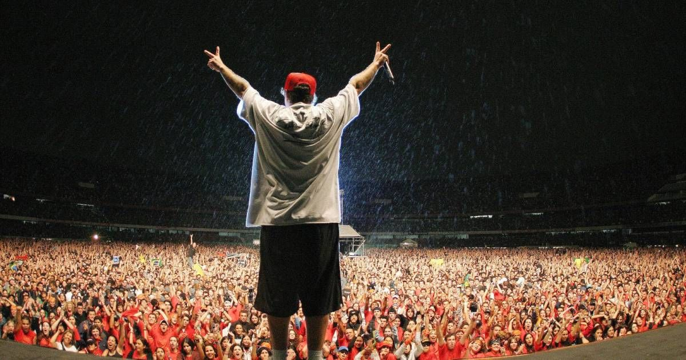

Chorão, nome artístico de Alexandre Magno Abrão, nasceu em 9 de abril de 1970, em São Paulo, e foi o vocalista da banda Charlie Brown Jr.. Antes da música, foi skatista, o que influenciou seu estilo e suas letras. Criou a banda em 1992, misturando rock, rap e reggae, com músicas marcadas por mensagens sobre juventude, liberdade e vida urbana. Entre seus maiores sucessos estão “Proibida Pra Mim”, “Só os Loucos Sabem” e “Céu Azul”. Chorão faleceu em 6 de março de 2013, mas continua sendo lembrado como um dos maiores nomes do rock brasileiro.